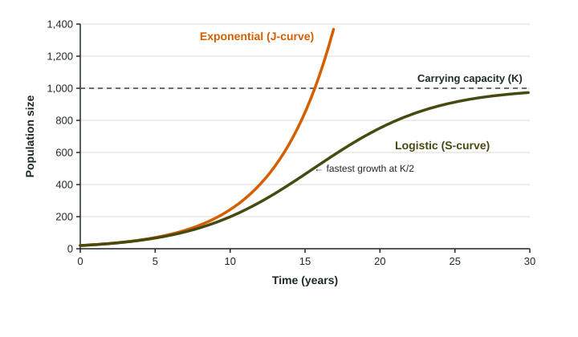

Put a few bacteria in a dish of food and count them every hour. At first they double and double again, faster and faster. Then the food runs low, waste builds up, and growth slows until the count barely changes. Those two phases are the two models of population growth the exam uses: exponential and logistic.
Exponential growth: the J-curve
When resources are unlimited, a population grows by a constant percent each period. Because the percent is taken of a bigger and bigger number, the number added each period keeps growing. The graph bends upward like the letter J.
Worked example. A population of 5,000 grows 4% a year. How long until it doubles, and how large is it after 35 years?
Doubling time by the rule of 70: years.
35 years is two doubling times: .
A fixed number added each year would give much less: 4% of 5,000 is 200, and 200 a year for 35 years adds only 7,000. Exponential growth compounds.
Notice the difference between percent and number. In the first year, 4% of 5,000 adds 200 individuals. In the year the population passes 10,000, 4% adds more than 400. The percent stays the same, but the number added keeps climbing, which is why the J-curve gets steeper and steeper.
Exponential growth happens in nature for a time when a species reaches a new place with plenty of food and few enemies, such as rabbits in Australia in the 1800s, or when a population recovers after a crash.
Logistic growth: the S-curve

Real environments have limits. As a population grows, each individual gets a smaller share of food, water and space. Fewer young are born and more individuals die, so growth slows. The population levels off at the carrying capacity (K). The graph is S-shaped:
- Bottom of the S: slow at first, because there are few individuals to reproduce.
- Middle: fastest growth at about half of K, where there are many individuals and still plenty of resources.
- Top: growth slows to nearly zero as the population reaches K.
Limiting factors
A limiting factor is anything that holds a population back: food, water, space, light, nutrients, predators, disease. They come in two kinds.
| Density-dependent | Density-independent | |
|---|---|---|
| Effect grows with crowding? | yes | no |
| Examples | food shortage, competition, disease, parasites, predation | floods, frosts, fires, droughts, storms |
| Role in logistic growth | bends the curve toward K | can knock a population down at any size |
Population density
Population density is the number of individuals per unit of area:
On the exam
- Name the curve: J (exponential, no limits) or S (logistic, levels off at K), and point to where on a graph growth is fastest.
- Classify a limiting factor as density-dependent or density-independent, and say why.
- Use the rule of 70 for doubling time with the growth rate in percent, and count doublings to project a population.